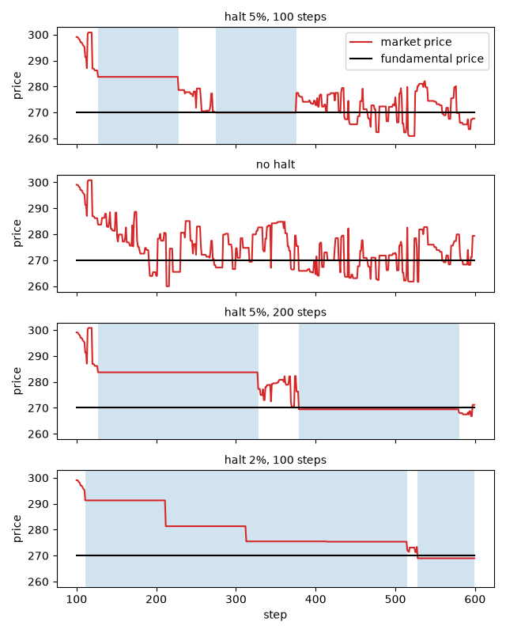

Trading halts¶
A trading halt, or circuit breaker, stops the trading of a market for a while when its price has moved too far.
This tutorial follows the Plham tutorials TradingHaltMain
and TradingHaltMain_UseCases: the fundamental price
falls by 10%, and the market follows it with and without halts, with longer halts, and with a lower threshold.
The complete script is tutorial_trading_halt.py.
It needs matplotlib for the plot, which is not installed with PAMS
(pip install matplotlib).
The model¶
The market has 100 FCNAgent agents, which expect a future price from the gap to the
fundamental price, the recent trend and noise, and place orders around this price.
At step 100, FundamentalPriceShock lowers the fundamental price from 300 to 270. The agents
then sell, and the market price falls towards 270.
TradingHaltRule checks the market price \(P\) after every trade. Let \(P_0\) be the
market price at step 0, \(r\) the rate triggerChangeRate and \(n\) the number of halts so far. If
the rule halts all its target markets. While a market is halted, it still accepts orders and cancels, but it
executes nothing, so its price does not change. A halt that starts at step \(s\) lasts until the end of step
\(s + L\), where \(L\) is haltingTimeLength, and the market trades again from step \(s + L + 1\).
Here \(P_0 = 300\). With \(r = 0.05\), the first halt comes when the price has moved by 5% (to 285 or 315), the second by 10% (270 or 330), and so on.
The Plham tutorial asks three questions: what the halts do after the shock, what longer halts do, and what a lower threshold does.
The configuration¶
The configuration is samples/trading_halt/config.json of the repository without its MEMO keys, written as a
Python dict:
CONFIG: Dict[str, Any] = {
"simulation": {
"markets": ["Market"],
"agents": ["FCNAgents"],
"sessions": [
{
"sessionName": 0,
"iterationSteps": 100,
"withOrderPlacement": True,
"withOrderExecution": False,
"withPrint": True,
},
{
"sessionName": 1,
"iterationSteps": 500,
"withOrderPlacement": True,
"withOrderExecution": True,
"withPrint": True,
"events": ["FundamentalPriceShock", "TradingHaltRule"],
},
],
},
"FundamentalPriceShock": {
"class": "FundamentalPriceShock",
"target": "Market",
"triggerTime": 0,
"priceChangeRate": -0.1,
"enabled": True,
},
"TradingHaltRule": {
"class": "TradingHaltRule",
"targetMarkets": ["Market"],
"triggerChangeRate": 0.05,
"haltingTimeLength": 100,
"enabled": True,
},
"Market": {
"class": "Market",
"tickSize": 0.00001,
"marketPrice": 300.0,
"outstandingShares": 25000,
},
"FCNAgents": {
"class": "FCNAgent",
"numAgents": 100,
"markets": ["Market"],
"assetVolume": 50,
"cashAmount": 10000,
"fundamentalWeight": {"expon": [1.0]},
"chartWeight": {"expon": [0.0]},
"noiseWeight": {"expon": [1.0]},
"noiseScale": 0.001,
"timeWindowSize": [100, 200],
"orderMargin": [0.0, 0.1],
},
}
The first session (steps 0 to 99) only fills the order book. The second session (steps 100 to 599) also executes the orders and lists both events in its
events.triggerTimecounts from the start of the session that lists the event, so the shock comes at step 100.The mean fundamental weight is 1.0 and the mean chart weight is 0 (see Random parameters (JsonRandom)), so the agents are pulled towards the fundamental price, and there are no trend followers.
Every key is explained in Events and Agents.
The script compares four cases. They change the threshold, the length of a halt and whether the rule is on:
# the threshold, the length of a halt and whether the rule is on
CASES: Dict[str, Tuple[float, int, bool]] = {
"halt 5%, 100 steps": (0.05, 100, True),
"no halt": (0.05, 100, False),
"halt 5%, 200 steps": (0.05, 200, True),
"halt 2%, 100 steps": (0.02, 100, True),
}
Running it¶
run_simulation changes these values in a copy of the configuration, and the length of the second session:
def run_simulation(
seed: int,
rate: float = 0.05,
length: int = 100,
enabled: bool = True,
main_steps: int = 500,
) -> Tuple[SequentialRunner, HaltRecorder]:
"""Run the simulation with the given trading halt rule.
Args:
seed (int): seed of the random number generator.
rate (float): threshold ``triggerChangeRate`` of the rule.
length (int): length ``haltingTimeLength`` of a halt.
enabled (bool): whether the rule is on.
main_steps (int): number of steps of the main session.
Returns:
Tuple[SequentialRunner, HaltRecorder]: the runner after the run and the
recorder of the halted steps.
"""
config = copy.deepcopy(CONFIG)
config["TradingHaltRule"]["triggerChangeRate"] = rate
config["TradingHaltRule"]["haltingTimeLength"] = length
config["TradingHaltRule"]["enabled"] = enabled
config["simulation"]["sessions"][1]["iterationSteps"] = main_steps
recorder = HaltRecorder()
runner = SequentialRunner(
settings=config, prng=random.Random(seed), logger=recorder
)
# main() prints the time taken, which is not needed here
with contextlib.redirect_stdout(io.StringIO()):
runner.main()
return runner, recorder
A rule with "enabled": False does nothing. It still draws its random numbers, so a run with the rule off is
the same as the run with the rule on until the first halt.
The rule counts its halts in activation_count, but it does not keep the steps of the halts. A logger (see
Writing a logger) records them: at the end of each step, market.is_running is False while the market
is halted.
class HaltRecorder(Logger):
"""Record the steps at whose end the market is halted."""
def __init__(self) -> None:
"""Initialize the recorder."""
super().__init__()
self.halted: List[int] = []
def process_market_step_end_log(self, log: MarketStepEndLog) -> None:
"""Keep the step if the market is not running at its end.
Args:
log (MarketStepEndLog): the log of the end of a market step.
"""
# in a session without order execution, the market never runs
if log.session.with_order_execution and not log.market.is_running:
self.halted.append(log.market.get_time())
halt_starts finds the first step of each halt in these steps. A halt covers \(L + 1\) step ends, so a
halted step after them belongs to a new halt:
def halt_starts(halted: List[int], length: int) -> List[int]:
"""Find the steps at which the halts start.
A halt that starts at step ``s`` covers the ends of the steps ``s`` to
``s + length``, so a halted step after them belongs to a new halt.
Args:
halted (List[int]): the halted steps, in order.
length (int): length ``haltingTimeLength`` of a halt.
Returns:
List[int]: the first step of each halt.
"""
starts: List[int] = []
for time in halted:
if len(starts) == 0 or time > starts[-1] + length:
starts.append(time)
return starts
halt_stats sums up a run: the number of halts, the number of halted steps, the first step of each halt, the
lowest and the last market prices of the second session, and the number of shares traded in it. A disabled event
is not added to simulator.name2event, so a run without the rule has no halts:
def halt_stats(runner: SequentialRunner, recorder: HaltRecorder) -> Dict[str, Any]:
"""Summarize the halts and the prices of the main session.
Args:
runner (SequentialRunner): the runner after the run.
recorder (HaltRecorder): the recorder used as the logger of the run.
Returns:
Dict[str, Any]: the number of halts, the number of halted steps, the first
step of each halt, the lowest and the last market prices, and the number
of shares traded.
"""
market = runner.simulator.name2market["Market"]
main_session = runner.simulator.sessions[1]
start = main_session.session_start_time
times = range(start, start + main_session.iteration_steps)
prices: List[float] = market.get_market_prices(times=times)
# a disabled event registers no hooks and is not in name2event
event = runner.simulator.name2event.get("TradingHaltRule")
halts = 0
starts: List[int] = []
if isinstance(event, TradingHaltRule):
halts = event.activation_count
starts = halt_starts(recorder.halted, event.halting_time_length)
return {
"halts": halts,
"halted": len(recorder.halted),
"starts": starts,
"lowest": min(prices),
"last": prices[-1],
"traded": sum(market.get_executed_volumes(times=times)),
}
Halts after the shock¶
The script first runs the four cases with seed 42. It prints:
case halts halted lowest last traded halt starts
halt 5%, 100 steps 2 202 260.91 267.66 191 127, 275
no halt 0 0 259.92 279.38 215 -
halt 5%, 200 steps 2 402 266.82 271.17 148 127, 379
halt 2%, 100 steps 5 476 268.97 268.97 141 111, 212, 313, 414, 528
The figure shows the prices of the four cases, with the halts shaded:

With halts of 100 steps at 5% (the first row and the first panel):
The price falls after the shock. At step 127, a trade at 283.71, 5.4% below 300, starts the first halt.
The market trades again from step 228. The orders placed during the halt trade at once: 27 shares change hands in this step, and the price moves to 278.64.
At step 275, a trade at 269.95, 10.0% below 300, starts the second halt. After it, 24 shares trade at once at step 376. A third halt would need a fall of 15%, to 255, which does not happen.
The market is halted at the end of 202 of the 500 steps: two halts of 101 steps.
Without halts (the second row), the run is the same until step 127. The price then falls below the new fundamental price, to 259.92 at step 213, and ends at 279.38. In this run the halts hardly change the lowest price (260.91 against 259.92). The runs with other seeds below show a clearer difference.
Longer halts¶
The Plham tutorial then makes the halts 200 steps long. The effect of a halt should depend on its length compared with the time windows of the agents, which are between 100 and 200 steps, so 200 steps is longer than any of them. In PAMS, an FCN agent’s order also stays in the book for as many steps as its time window, so no order placed before a halt of 200 steps is left when the market trades again.
With 200 steps (the third row and panel), the halts start at steps 127 and 379, and the market is halted in 402 of the 500 steps. The lowest price is 266.82, closer to 270 than in the first two cases, but only 148 shares trade, against 215 without halts.
A lower threshold¶
Last, the Plham tutorial lowers the threshold. The shock is 10%, so with a threshold of 2% the rule can halt the market several times while the price follows the shock. With 2% (the last row and panel), the halts come at moves of 2%, 4%, 6%, 8% and 10%, and the market halts five times, at steps 111, 212, 313, 414 and 528.
The halts at steps 212, 313 and 414 start in the step in which the market trades again, for two reasons:
At step 212, the orders placed during the first halt trade at once. This jump moves the price from 291.28 (2.9% below 300) to 281.33 (6.2% below), past the threshold of 4%.
At steps 313 and 414, the price is already past the next threshold when the market trades again: 281.33 is past 6%, and 275.48, the price from step 313, is past 8%. The trades of these steps do not bring the price back, so the market halts again at once.
The market is halted at the end of 476 of the 500 steps, and the price falls in steps. The last halt lasts until the end of the run, so the last price is also the lowest, 268.97.
Over ten seeds¶
The script repeats the four cases for the seeds 42 to 51 and prints the means:
case halts halted lowest last traded
halt 5%, 100 steps 2.0 202.0 258.79 265.60 191.3
no halt 0.0 0.0 251.19 268.07 216.0
halt 5%, 200 steps 2.0 399.7 265.61 268.66 136.3
halt 2%, 100 steps 5.0 472.0 268.90 268.90 136.1
Every seed has two halts at 5% and five at 2%.
On average, the halts raise the lowest price: the mean lowest price is 251.19 without halts, 258.79 with halts of 100 steps, 265.61 with halts of 200 steps and 268.90 with the 2% threshold.
The halts do not bring the last price closer to the new fundamental price of 270: the mean last price is 265.60 with halts of 100 steps, against 268.07 without halts.
The difference between the first two cases comes mostly from two seeds. Without halts, the lowest price is 229.1 for seed 46 and 221.1 for seed 47. For the other eight seeds, it is between 255 and 260, close to the lowest prices with halts of 100 steps (255 to 262).
The halts cost trading time. The market is halted in about 40%, 80% and 94% of the second session in the three cases with halts, and fewer shares trade.
A halted market cannot trade, so it cannot fall either. With the 2% threshold, the price is frozen most of the time, and its lowest price says little about how the market would move.
Running the script¶
Running the complete script with python tutorial_trading_halt.py prints the two tables above and writes
trading_halt_prices.png to the current directory. It runs 44 simulations of 600 steps.
A price limit keeps the market open and moves the order prices instead: see Price limits.
Differences from Plham¶
Plham takes the reference price from a reference market. PAMS compares each market with its own price at step 0, which never changes, and ignores the
referenceMarketkey of older configurations with a warning.The numbers above are from PAMS with the seeds 42 to 51, and they do not match the figures of the Plham tutorial.
References¶
清水季子, 村永淳 (Shimizu and Muranaga) (1999). 取引停止措置が市場機能に及ぼす影響：人為的シャットダウンを備えた市場の挙動に関するシミュレーション分析. IMES Discussion Paper Series 99-J-1, Institute for Monetary and Economic Studies, Bank of Japan.
小林重人, 橋本敬 (Kobayashi and Hashimoto) (2006). サーキットブレーカー制度の有効性とその限界 ～人工市場シミュレーションによる検討～. MPSシンポジウム2006, 情報処理学会シンポジウムシリーズ, Vol. 2006, No. 10, 29–36. Cited by the Plham tutorial.
Kobayashi, S. and Hashimoto, T. (2011). Benefits and limits of circuit breaker: institutional design using artificial futures market. Evolutionary and Institutional Economics Review, 7(2), 355–372. https://doi.org/10.14441/eier.7.355
Chiarella, C. and Iori, G. (2002). A simulation analysis of the microstructure of double auction markets. Quantitative Finance, 2(5), 346–353. The FCN agents come from this model.